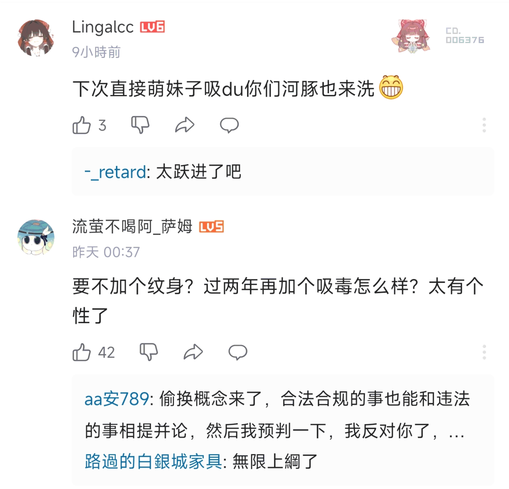
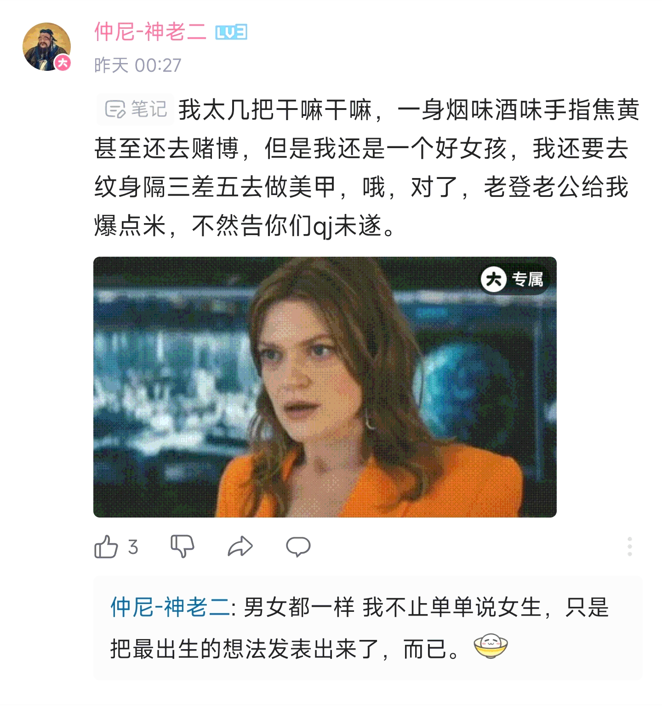

依菲雅✨𝑬𝒑𝒉𝒆𝒊𝒂🏳️⚧️
@nyaepheia
RT @bolckAshley: 最近在看「上伊那牡丹，醉姿如百合」，看番之餘還能了解不少酒類的知識，我覺得這很有意思，然而我是真沒想到這種番也能起爭議，什麼「抽煙喝酒是不是好女孩」都來了😅
看到抽煙喝酒的女性馬上就要聯想到她們賣淫吸毒，然後聯想到誣告男性爆金幣：只能說中國男人…


𝐀𝐬𝐡𝐥𝐞𝐲 𝐁𝐥𝐨𝐜𝐤🍥🌹🇹🇼🏳️⚧️🇪🇺
@bolckAshley
最近在看「上伊那牡丹，醉姿如百合」，看番之餘還能了解不少酒類的知識，我覺得這很有意思，然而我是真沒想到這種番也能起爭議，什麼「抽煙喝酒是不是好女孩」都來了😅
看到抽煙喝酒的女性馬上就要聯想到她們賣淫吸毒，然後聯想到誣告男性爆金幣：只能說中國男人只有在這種時候想像力才如此的豐富😁 https://t.co/yNVMqCHgWa